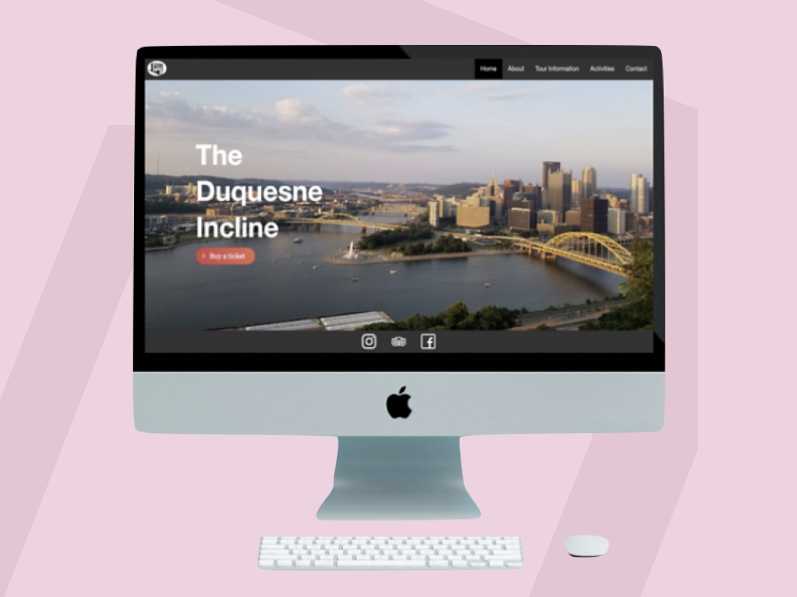

-

Homies
Worked with cloud banking company Blend to create an online platform to connect home buyers .
UX ResearchUX DesignPrototyping -

The Duquesne Incline
Re-designed and programmed website for a better user experience.
Web DesignFront-end Programming -

Data Driven Zoo Display Design
Worked with the Pittsburgh Zoo to create displays that increase visitors and engagement
Motion DesignUX DesignData driven Design